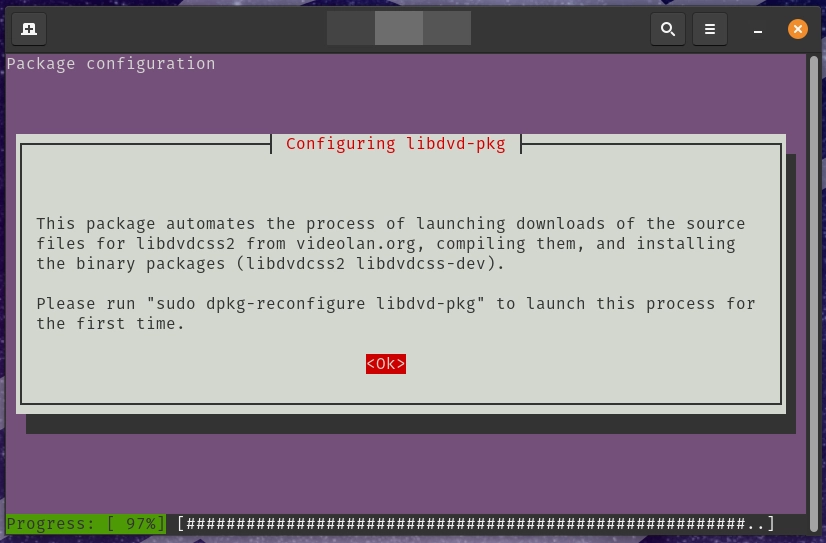
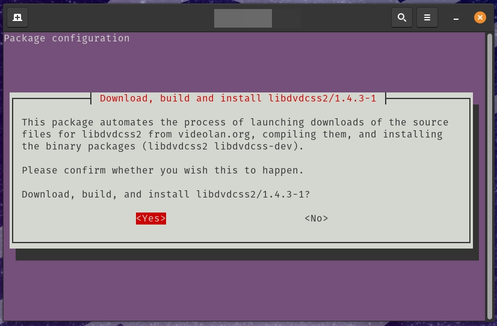
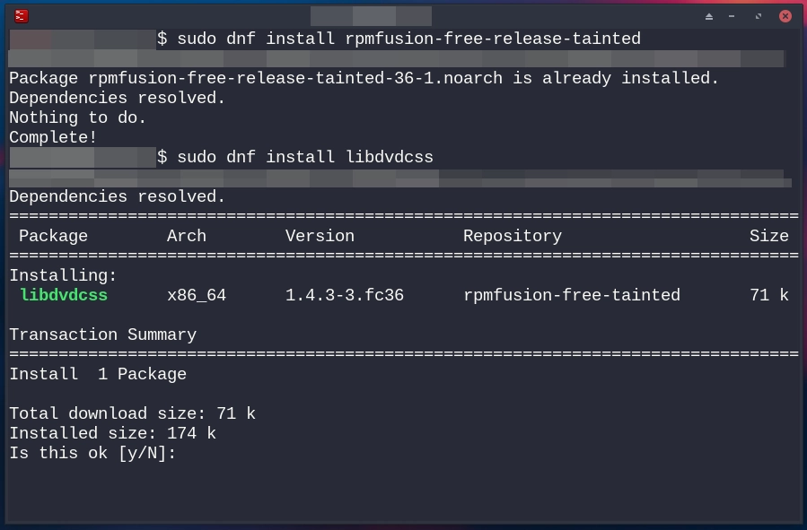
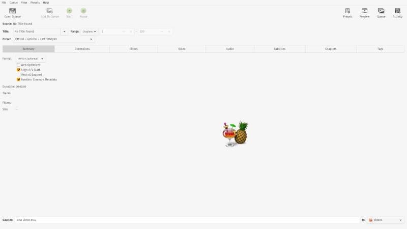
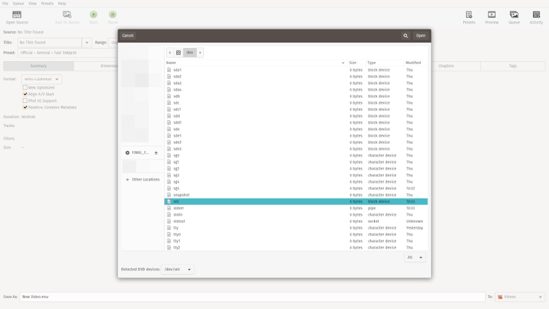
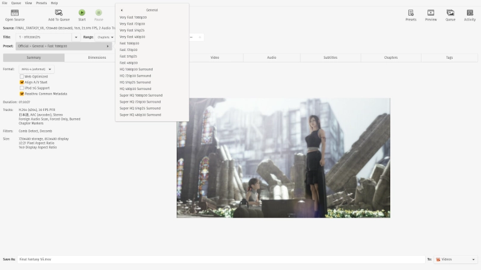
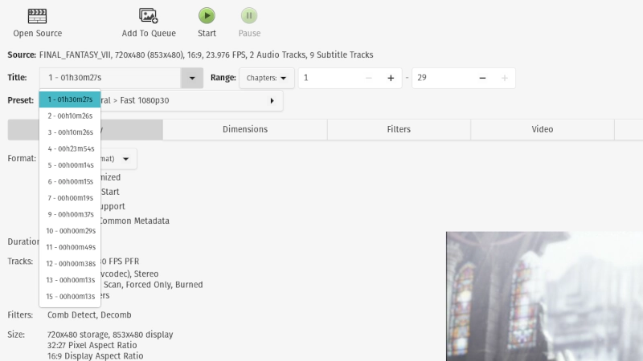
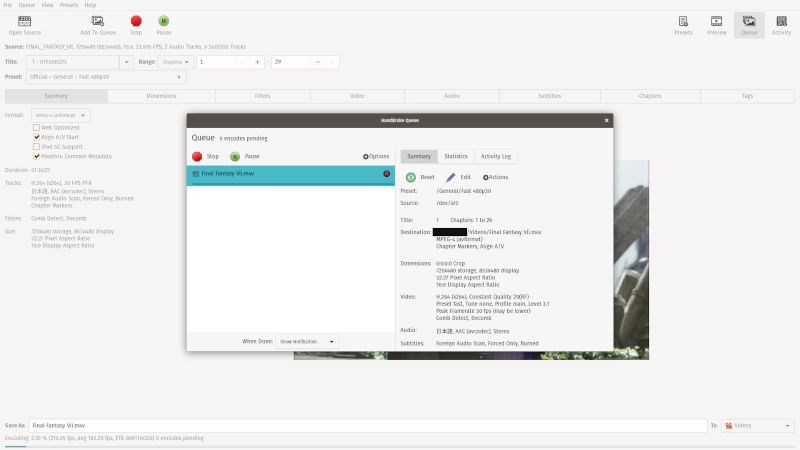

Handbrake is a powerful open-source tool for encoding and editing video. It includes a graphical control panel to manage your encodes and even preview the result. Part of what makes Handbrake such a favorite in the Linux world is its ability to encode off of a DVD, effectively making it one of the best tools available for ripping DVDs.
The legality of ripping DVDs can be murky in some countries. The purpose of this article is to inform you how to make archival copies of DVDs that you legally own, but be sure to check the laws in your area before continuing.
Do note that Handbrake is also available for Windows and macOS.
Install Handbrake
Everything here relies on Handbrake, but there’s another piece you’ll need too. The VLC developers created a library, libdvdcss, for decoding copyright-protected DVDs for playback. Handbrake relies on it to decode DVDs, too, so you’ll need it as well.
Ubuntu, Mint, Pop!OS
Ubuntu does have Handbrake in its repositories, but due to the legal grayness of libdvdcss, it’s not in the repositories. Instead, Ubuntu provides a script to build the package yourself. Don’t worry, it’s all automatic. Start by installing libdvd-pkg, the script package.
sudo apt install libdvd-pkg
A menu will pop up in the terminal asking if you want to continue. Agree to everything and keep going. When it’s done, you’ll need to reconfigure the package to build and install libdvdcss.
sudo dpkg-reconfigure libdvd-pkg
Finally, install Handbrake.
sudo apt install handbrake
Fedora
Both packages are available on Fedora through the RPM Fusion repository. Start by enabling it on your system.
sudo dnf install https://download1.rpmfusion.org/free/fedora/rpmfusion-free-release-$(rpm -E %fedora).noarch.rpm https://download1.rpmfusion.org/nonfree/fedora/rpmfusion-nonfree-release-$(rpm -E %fedora).noarch.rpm
libdvdcss is found in the separate “tainted” RPM Fusion repo. You’ll need to add that too via a package from the regular RPM Fusion.
sudo dnf install rpmfusion-free-release-tainted
Now you can install Handbrake and libdvdcss.
sudo dnf install libdvdcss handbrake-gui
Arch Linux
Arch Linux has both packages in its regular repositories. Just install them.
sudo pacman -S libdvdcss handbrake
Rip a DVD
Open Handbrake. You can find it under the “Multimedia” category on your application menu. When Handbrake opens, it might look overwhelming at first, but it’s actually fairly simple, when you break it down.
Load the Source
A new window will open for you to browse to your source. There are a couple shortcuts to your DVD drive. First, if you already have your DVD in the drive, it should appear with the DVD’s title on the left of the window. Click on it and select “VIDEO_TS” to open.
You can also use the “Detected DVD devices” drop-down at the bottom of the window. It’ll probably have your drive selected already, so you can just open it right from there. If not, you can usually find your drive under the drop-down. It’s usually a drive letter like “/dev/sr0.”
After you select it, your drive will spin and start reading your DVD. A progress bar will pop up at the top of the Handbrake window as it loads your DVD. When it’s done, you’ll see your DVD’s title listed as the source in the upper-left.
Select the Preset
Handbrake has presets with common aspect ratios, frame rates, and support for certain devices. You’ll find the preset list in the upper-right corner of the Handbrake window.
Scroll through and see what looks best for your use. If you’re just looking to make a copy of your DVD, you can select the “Fast 1080p30” preset as a good default. It will produce a quality 1080p copy of your DVD. If your DVD is an older standard definition DVD, Handbrake will use the native dimensions of the DVD and copy it as is.
Add Titles to the Queue
Turn your attention back to the upper-left corner of the screen. Take a look at the “Title” drop-down directly under the “Source” label with your DVD’s title.
DVDs are broken up into titles. These are the individual videos on the DVD, and most of them are just garbage from the menus. It’s up to you to pick out the titles that contain the actual content that you want. The easiest way to do so is with the duration of the title. If your DVD is a movie, you can find the title with the same run time as the full film. If you’re looking for the episodes of a TV show, find titles that last about as long as one. They should all be fairly uniform. When you have your title, select it.
Below the title drop-down, take a look under the “Destination” header. There you can name your file. Under that, you can choose the destination for your video. You can place it anywhere with enough free space.
Below the title drop-down, take a look under the “Destination” header. There you can name your file. Under that, you can choose the destination for your video. You can place it anywhere with enough free space.
After everything looks good, press the “Add To Queue” button in the menu across the top of your window. It’s right next to the “Open Source” one. If you’re doing TV episodes, repeat these steps for each episode, adding each one to the queue.
Rip!
Now that you have all of the titles that you want to back up in your queue, you can start ripping. If you’d like to double-check your queue, click the “Show Queue” button in the top menu. It’ll display all of your enqueued titles and the output file names.
Click “Start Encoding” in the top menu to start ripping your DVD. Handbrake will take a decent amount of time, depending on your CPU and DVD drive speeds, to work its way through your selected titles. When it’s done, it’ll show you a success message. At that point you’re free to eject your DVD and/or close Handbrake.
Congrats! You’re now ready to back up your DVDs or view them digitally on your devices. Remember to check the laws in your area before doing this, and never illegally distribute duplicated DVDs.